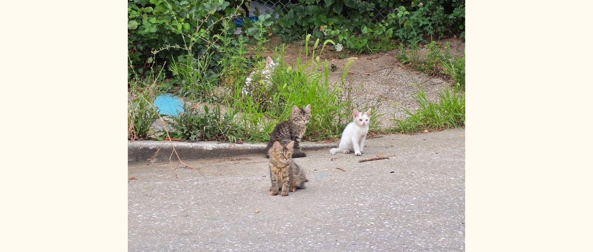
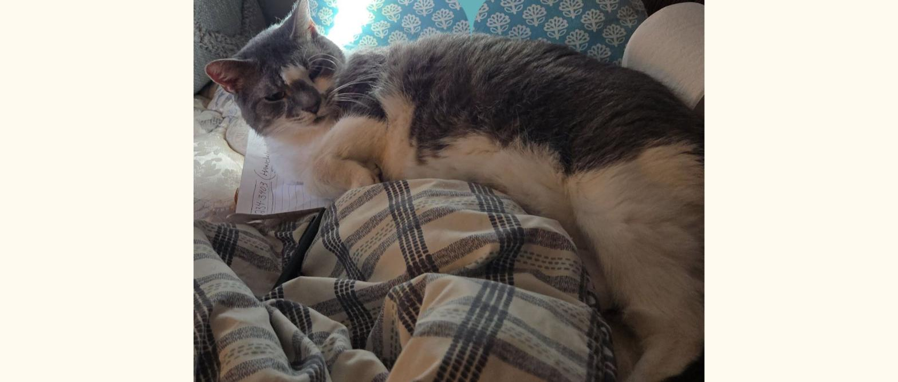
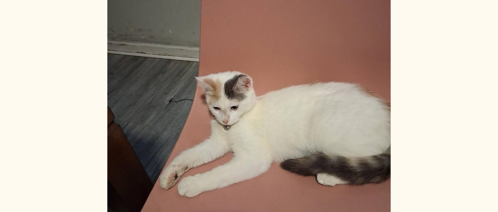
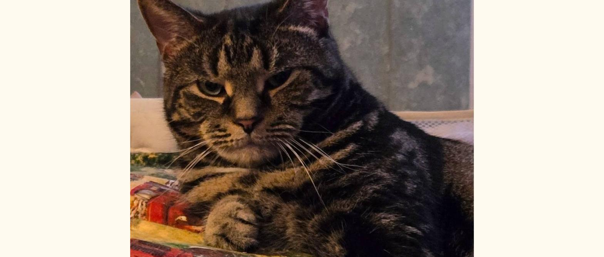
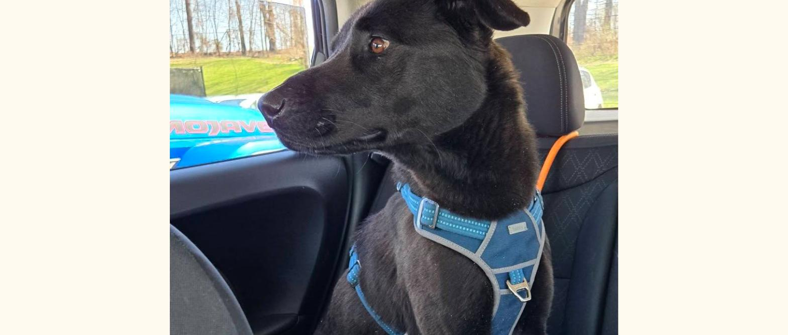

Real animals. Real bowls to fill.
These are some of the fur babies we are feeding and treating right now. Every dollar donated goes to their food, litter, flea treatment, vaccines and vet visits.






The stories behind the photos
The four dumped kittens. This summer someone left four tiny kittens on a street and drove away. We trapped all four, got them fed, checked over and safe, and every one of them was placed in a foster home within days. Our post about them reached more than 6,000 people and was shared over 450 times, which is exactly how a small rescue like ours finds homes and help fast.
Tweety. Tweety was thrown from a moving car along with her siblings. She came to us with an infection that had to be treated first, and she needs tail surgery once she has gained enough weight to handle it safely. Her photo was chosen by Show Your Soft Side to launch Project Kitty Angel, a spay/neuter effort for the region's street cats.
Precious. Precious is one of our own rescues and now lives the indoor life. Older cats like her need the most vet visits, and vet bills are the single biggest cost we carry.
The colony regulars. Many of the cats we care for live in outdoor colonies at feeding sites we look after every day, marked with our own Maryland Fur Babies signs. Every one of them eats every single day, and we work to get them spayed or neutered so the colonies stop growing.
Not just cats. We are more than a cat rescue. Dogs, rabbits and whoever else shows up get the same food, care and rides to the vet and back.
What it takes to care for them
- Food and litter, every day, for every animal and every colony we feed.
- Flea, tick and deworming treatment so the animals stay healthy and comfortable.
- Vaccines and spay/neuter surgeries, which stop the cycle of new litters on the street.
- Emergency vet visits for injuries, infections and surgeries like Tweety's.
- Transportation to and from the vet, which we provide ourselves.
We are not able to take adoption, intake or placement requests online. Our rescue work happens locally, through people who know us. What you can do from anywhere is help keep these animals fed and treated.